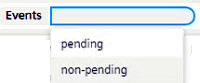
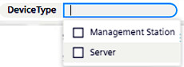
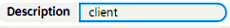

Filtering Device Tiles
You can use the search field at the top of Device View to filter which tiles are displayed, and show only those that match certain criteria. Filter results are dynamically updated to reflect changes in the device status, for example occurrence of a new event.
- Tap or click inside the search bar.
- Select a filter criterion from the drop-down list
- Provide the value or values that will make it true. Note that some criteria are single-select, some allow multi-select, and some take a text string.
- Repeat steps 1-3 to set additional filter criteria, as needed.
- To change an existing filter criterion, select it and set a new value.
- To remove it completely, select the x alongside it
- To apply the filters, either press the Enter key, or, from the search bar, select Select search criteria.
- Device View shows only the device or group tiles that match all the filter criteria.
- To remove all the filter criteria, select the x on the far right of the search bar.
Logic of filter criteria
Type of criterion | example | logic |
|---|---|---|
single-select | 
| Only one value can be selected. The criterion will be true for any tile that matches the selected value. |
multi-select | 
| The criterion will be true for any tile that matches at least one of the selected values. The multi-select options shown are only those relevant to the visible tiles. |
text-string | 
| The criterion will be true for any tile that matches the provided string (contained anywhere). If you enter an empty string this will always match. |
If multiple criteria are set, the logic between them is AND. That is, only tiles for which all the criteria are true will be displayed.
Notes on Filter Criteria
On a group tile:
- Events = pending if at least one device in the group has events pending (bell icon present).
- Status = disconnected if at least one device in the group is disconnected
- Name refers to the name of the group, and Description is the same as the Name.
When filtering by network:
- All devices without a network will always be filtered out
- All group tiles will also be filtered out, because they do not have a network
- Accordingly the results will show only tiles with an assigned network whose name matches the provided filter string.